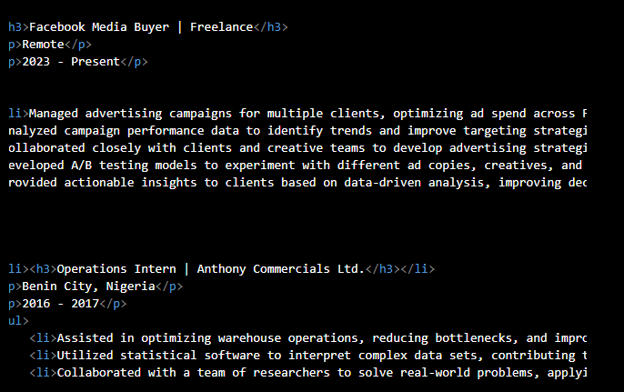
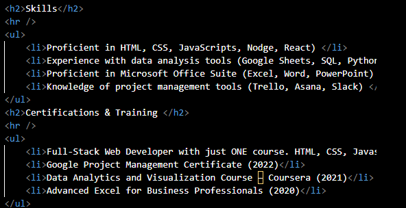

David Ijiede
Summary
Dynamic and results-oriented Applied Mathematics graduate from the University of Benin with a strong analytical mindset and a passion for optimizing operational processes. Backed by 7 years of experience in media buying and advertising, I am eager to transition into operations management, leveraging my problem-solving abilities and strategic thinking to enhance efficiency and growth for startups and multinational companies. Adept at data analysis, project management, and cross-functional collaboration, I am committed to driving operational excellence in fast-paced environments.
Education
Bachelor of Science in Applied Mathematics
University of Benin, Nigeria
2015
- Relevant Coursework: Operations Research, Probability & Statistics, Optimization Theory, Data Analysis
Work Experience
Facebook Media Buyer | Freelance
Remote
2023 - Present
- Managed advertising campaigns for multiple clients, optimizing ad spend across Facebook and Instagram platforms to increase ROI by up to 30%.
- Analyzed campaign performance data to identify trends and improve targeting strategies, leading to better audience engagement.
- Collaborated closely with clients and creative teams to develop advertising strategies aligned with business goals.
- Developed A/B testing models to experiment with different ad copies, creatives, and audience targeting, enhancing overall campaign effectiveness.
- Provided actionable insights to clients based on data-driven analysis, improving decision-making and achieving marketing objectives.
Operations Intern | Anthony Commercials Ltd.
Benin City, Nigeria
2016 - 2017
- Assisted in optimizing warehouse operations, reducing bottlenecks, and improving inventory management practices.
- Utilized statistical software to interpret complex data sets, contributing to academic publications and presentations.
- Collaborated with a team of researchers to solve real-world problems, applying mathematical models to operational challenges in industries.
Skills
- Proficient in HTML, CSS, JavaScripts, Nodge, React)
- Experience with data analysis tools (Google Sheets, SQL, Python for Data Analysis)
- Proficient in Microsoft Office Suite (Excel, Word, PowerPoint)
- Knowledge of project management tools (Trello, Asana, Slack)
Certifications & Training
- Full-Stack Web Developer with just ONE course. HTML, CSS, Javascript, Node, React, PostgreSQL, Web3 and DApps
- Google Project Management Certificate (2022)
- Data Analytics and Visualization Course – Coursera (2021)
- Advanced Excel for Business Professionals (2020)
My top projects


Hobbies
Contact Me